在最终完工前，我们可以对一些项进行微调，以尽可能获得最佳结果：
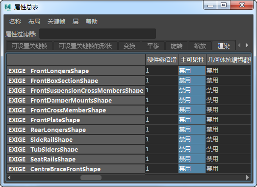
在“属性总表”(Attribute Spread Sheet)中禁用“主可见性”(Primary Visibility)
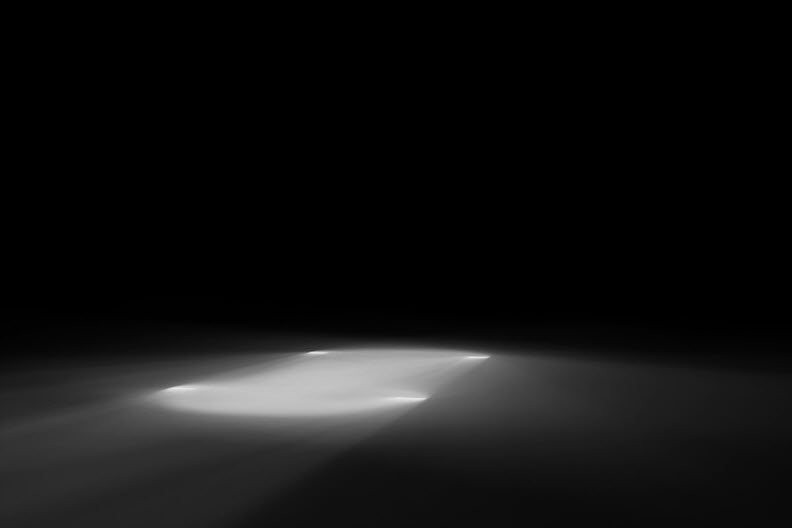
Ai 阴影蒙版渲染
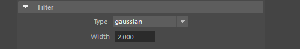
默认情况下，Arnold 渲染时使用的 filter_width 值为 2。但是，相较于原始摄影背板，渲染后的汽车看起来有点过于清晰。此外，相较于摄影背景，汽车边缘上的抗锯齿看起来也过于清晰。我们可以尝试在后期修复此问题，但在后期对图像进行模糊处理只是对像素整体进行平均化，可能会产生不理想的结果。它也会在后期制作工作中增加不必要的步骤。更好的方法是使用较宽的过滤器宽度设置进行渲染。
下面比较了在同一场景中使用 filter_width 2 和 3 分别进行渲染的效果：
| 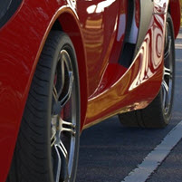 | 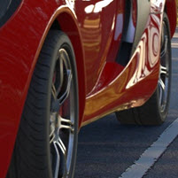 |
| _filter_width_： 2。渲染在背板中过于清晰。 | filter_width_： 3。增加 _filter_width 有助于混合渲染与背板。 |
filter_width 值优先使用 2.5，因为值为 3 时有点过于模糊。我们可以通过实验来获得合适的值，当然，这也取决于场景。在本例中，当前使用的 HDR 贴图的分辨率小于所需的值。这可能会在汽车的材质中产生低分辨率的反射。在这种情况下，增加 filter_width 也会有所帮助。
根据使用的 HDR 贴图和背板，与地平面接触的轮胎区域看起来可能会比摄影背景中的灯光稍暗。您可能希望有更多的灯光从地板反射到轮胎底部。
我们可以通过启用 shadow_matte 着色器的 indirect_diffuse 属性来解决此问题。您可以手动选择颜色，也可以选择 diffuse_color，然后使用颜色拾取器单击图像平面背景地面上的像素。第二种方法可确保相同的颜色反射回轮胎。
下面是该效果的一个极端示例：
| 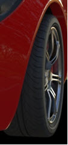 | 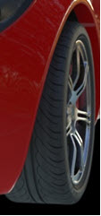 |
| _漫反射_： 0 | _漫反射_： 1 |
您现在拥有将汽车合成到背板所需的所有渲染元素：
| 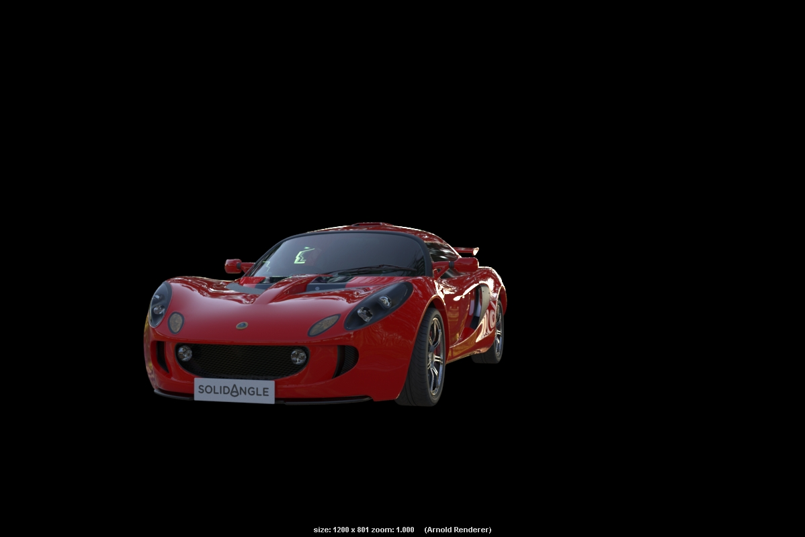 | 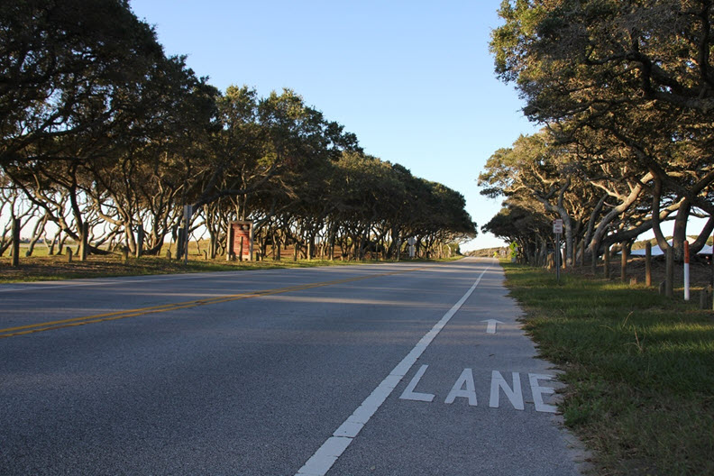 | |
| 汽车美景渲染 | shadow_matte 渲染 | 摄影背板 |
下图是使用 6 个 AA 采样渲染的最终结果。skydome_light 采样数已增加到 3 以进行最终渲染。
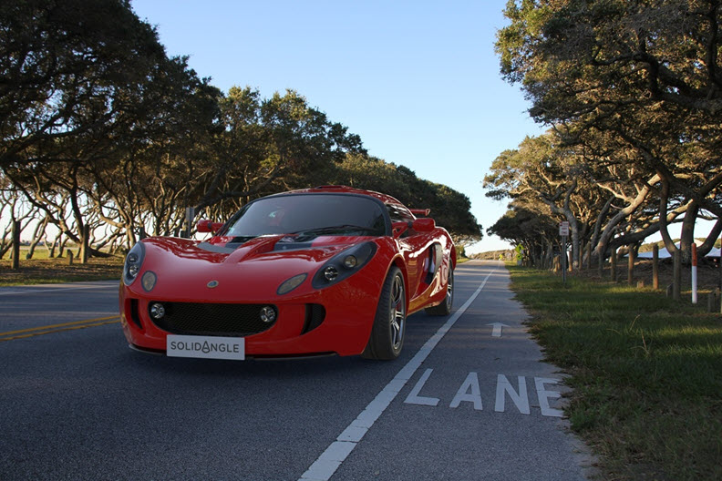
最终合成的渲染
也可以尝试使用与上面相同的工作流渲染另一个背板：
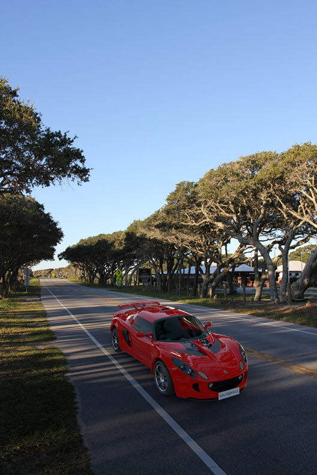